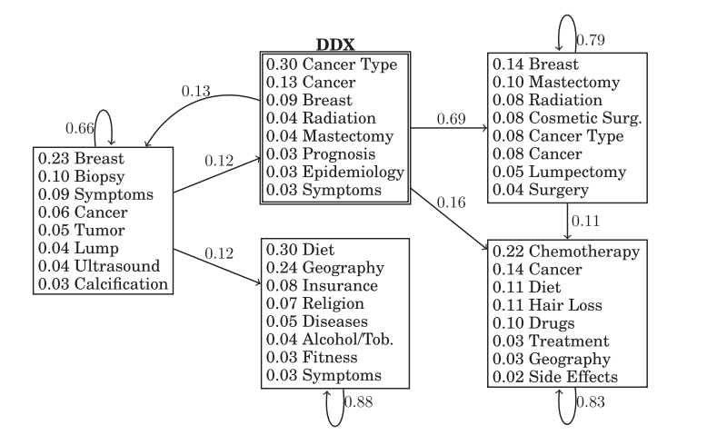
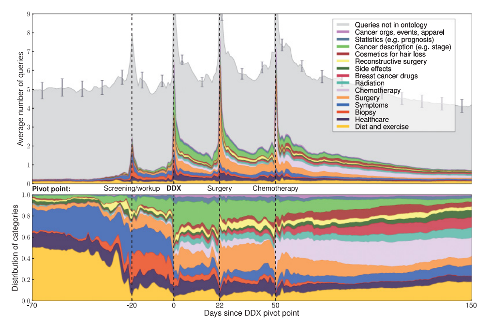
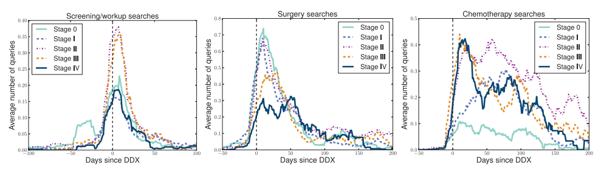

1
Tumor & Biopsy
A tumor is an abnormal mass. When screening flags one, a doctor orders a biopsy — a tissue sample — to determine if it is cancerous.
Three concepts you need to read the search data correctly.
A tumor is an abnormal mass. When screening flags one, a doctor orders a biopsy — a tissue sample — to determine if it is cancerous.
Pathology confirms the type, grade, and stage. Stages run from 0 (non-invasive) to IV (metastasized to other organs).
Care follows a typical order: surgery (lumpectomy / mastectomy) → chemotherapy and / or radiation.
A cancer diagnosis is a highly disruptive event — patients are immersed in new terminology, financial concerns, and time-sensitive decisions.
Search logs are extremely noisy. How do we tell apart…
Search logs used to track public-health events at a macro level — flu outbreaks, dengue, unreported drug side effects.
Tracks the long-term, multi-session, episodic history of a single user grappling with a disruptive life event.
Before any ML, the authors surveyed 867 Microsoft employees — not a patient sample. The paper itself notes the panel is "not representative of the general population".
Also more likely to search for staging / grading, healthcare providers, and treatment side effects.
It told the researchers which terms deserve to be treated as experiential — strong positive signals in the feature space.
The survey directly seeded the 7 experiential categories later used as features in the MART classifier:
Anonymized queries from millions of searchers, collected over 18 months via a browser add-on.
Searchers with enough breast-cancer-related activity to analyze — input pool for the DX classifier.
The cohort used for the population timeline & stage analyses later in the paper.
3 annotators (one with an MD) labeled 480 users by hand — 300 multi-annotator (A1 + one of A2/A3), then 180 more by A1 alone to expand training data.
History lacks a sustained focus on breast cancer (searches many disparate diseases).
Demonstrates a sustained focus on breast cancer.
Focus shifts during the log window — consistent with a new diagnosis. ✅ what we want.
Focus was already strong — diagnosis happened before the window. Treated as a negative instance.
The paper's Table II fictitious example (a representative composite of many real PP users), as a daily calendar — each dot is one query, colored by ontology category. (Next slide shows the query text.)
| Date · time | Query | Category |
|---|---|---|
| ▸ Pre-diagnosis · symptom & biopsy searches | ||
| Nov 13 · 7:40pm | feels like lump in breast | symptom |
| Dec 1 · 11:21am | pain after biopsy | symptom |
| Dec 1 · 11:31am | what happens after breast biopsy | diagnostics |
| Dec 9 · 6:33pm | how often are breast lumps cancer | diagnostics |
| Dec 9 · 6:45pm | does cancer make you thirsty | symptom |
| Dec 9 · 6:49pm | how long does it take for biopsy results | diagnostics |
| ▸ Dec 12 — the diagnosis day (DDX) · sudden staging & type queries | ||
| Dec 12 · 12:08pm | stage 2a breast cancer | staging |
| Dec 12 · 12:15pm | invasive ductal carcinoma | type |
| Dec 12 · 12:17pm | poorly differentiated idc breast cancer | grading |
| Dec 12 · 12:29pm | breast cancer survival rate | prognosis |
| Dec 12 · 12:32pm | stage 2 breast cancer survival rate | prognosis |
| Dec 12 · 7:44pm | breast reconstruction surgery | treatment |
| Dec 12 · 7:46pm | breast reconstruction after cancer | treatment |
| ▸ Post-diagnosis · planning treatment | ||
| Dec 13 · 8:05am | breast cancer treatment | treatment |
| Dec 13 · 8:16am | recovering from breast cancer | treatment |
| Dec 15 · 9:20am | breast cancer surgeon | provider |
| Dec 15 · 10:22am | full mastectomy | treatment |
| Dec 15 · 10:23am | mastectomy pros and cons | treatment |
| Dec 15 · 10:29am | do you need chemo after mastectomy | treatment |
From a symptom & biopsy phase, the user pivots within 24 minutes on Dec 12 — staging → type → grading → prognosis → reconstruction. That sudden shift is exactly the signal the DDX classifier locks onto.
For PP users, the day of diagnosis is labeled at the sudden appearance of specific pathology / staging queries following biopsy searches.
→ fair-to-good inter-annotator agreement across pairs.
Majority vote. If still ambiguous → assign the most negative label so ambiguous false positives don’t contaminate training.
If annotators disagree by ≤ 7 days → default to the later day, ensuring the label falls after pathology confirmation.
Ambiguous terms like “mass” count only when co-occurring with cancer / anatomy / healthcare terms in the same query.
A category of professional terminology — a powerful negative feature flagging students & clinicians.
Two special categories — "oncologist in seattle" or "breast cancer at age 55" add personal detail, signalling the user is experiencing the disease, not just curious.
First-person pronouns (“I”, “my”), experiential phrases (“I was diagnosed” + cancer string). Tracks conjunctions of up to 3 features.
Ratio of oncology queries vs total volume. High-frequency searches for many different symptoms → negative signal (exploratory).
Chronological sequencing — e.g. number of days between first Diagnostics query and first Drugs query.
Binary flag if an event falls in the first or last 10 days of the log window — where timeline data is inherently noisy.
What MART actually sees for one user — every history collapses into a single row of numbers.
| symptoms_count | 3 |
| biopsy_count | 4 |
| staging_count | 2 |
| type_count | 2 |
| treatment_count | 6 |
| oncology_ratio | 0.90 |
| has_first_person | 1 |
| days_diag→treat | 2 |
| has_expert_term | 0 |
| last_10_days_flag | 0 |
| … ~200 dims total | |
Multiple Additive Regression Trees — gradient-boosted trees.
A sequence of small decision trees — each new tree learns to predict what the previous trees got wrong. Sum their outputs and you get one strong predictor from many weak ones.
The final prediction is the joint probability — the product of the two.
Three classifiers, multiplied, to pinpoint a single day in months of noise.
Coarse: predict a 15-day window around the diagnosis.
Fine: predict the exact day, strictly inside that window.
For any day, predict whether the user has been diagnosed yet.
P(day = d) = Pwindow(d) · Pday(d) · Pstate(d)
θAD
For day d: probability d falls inside a 15-day window around the diagnosis.
θWW
Conditional on d being in the window: probability d is the exact diagnosis day.
θHB
For any day, predict label 0 (not yet) vs 1 (already) — a step function.
θAD)θWW)θHB)θHB)
θAD) = Σi=d−14..d P(win = {i, …, i+14})
Are all those features & classifiers worth it? Compare against the simplest possible rules.
Flag a user as positive if the percentage (or count) of their queries hitting experiential categories exceeds a fixed parameter.
if experiential_ratio > τ → positive
Estimate the day of diagnosis by simply picking either:
10-fold cross-validation on the manually labeled set.
↳ at 25 % recall (high-precision mode — only outputs most confident days): MART hits 72.8 % on the exact day, 90.2 % within 7 days, and 99.0 % within 15 days.
DDX errors are roughly symmetric — 52% of mistakes are too early. Aligns with intense search activity while awaiting biopsy results.
Removing the DESCRIPTION category (stage / grade terms) collapses DDX accuracy → staging searches are the sharpest diagnosis signal.
⚠ Labels are inferred from search behavior — not verified medical truth.
No user identities → validate at the aggregate level.
Predicted patient density vs. CDC state-by-state incidence:
Order-of-magnitude improvement over the unfiltered pool — evidence the classifier may indeed be picking out searchers consistent with new diagnoses, not just heavy searchers.
A block HMM = a regular HMM, but each day emits a bag of ontology categories instead of a single symbol — because a real day has many queries. 5 states · DDX state is constrained.
Real transition probabilities and top-emitted terms per state.

Strong self-loops (e.g. 0.66, 0.79, 0.83) — once a user enters a stage they tend to stay there. After DDX, the model branches into immediate care (mastectomy / radiation / lumpectomy) and longer-term treatment (chemotherapy / hair loss / drugs).
Real-world studies report a median 29 days from suspicious mammogram to diagnosis. The search-log average is slightly shorter — patients search for treatments before the procedure happens.
Non-cancer queries drop to 0.88× baseline at 60–90 d after DDX and 0.79× at 300–330 d — cancer search cuts into normal life. Cancer-related search is 3.89× heavier 60–90 d after DDX than before, and still 1.25× baseline a year later.
Thousands of user timelines, all aligned so day 0 is the inferred DDX.

A pivot point = the first day a user searches for terms from a clinical phase — screening (first mammography/ultrasound query before DDX), surgery (first surgery query after DDX), chemo (first chemo query after the surgery pivot). Thousands of users are aligned around each pivot, and the clinical sequence emerges in the average.
Users who queried symptoms (pain, lumps) before their inferred diagnosis day.
Symptom-prompted workups usually find more advanced cancers.
Users with no symptom queries prior to diagnosis — likely caught at routine screening.
Mirrors the clinical reality of routine mammography.
⚠ Suggestive, not statistically significant — the paper reports p = 0.154. A directional signal consistent with clinical reality, but not a confirmed effect.
Screening / surgery / chemotherapy queries plotted separately for stages 0 – IV.

Stage IV patients spike lower on screening (fewer routine catches) and higher and longer on chemotherapy — the search log faithfully mirrors the clinical course of more advanced disease.
Data from users who explicitly consented via a browser add-on’s terms. All user-identifying information stripped at the source.
Researchers had no IP addresses. Location aggregated to city / town level — one lat-long for the whole town — to prevent individual tracking.
Researchers could not contact users to verify diagnoses — which is exactly why epidemiological validation methods were needed.
Large-scale anonymized search logs contain rich temporal signals that effectively map to the real-world clinical life-cycle of serious illness.
By predicting a user’s current episode, search engines can dynamically tailor results — surfacing “treatment preparation” info instead of “diagnosis explainers” for someone weeks into care.
A new framework for understanding the evolving, day-to-day information gaps of patients — paving the way for smarter decision-support systems in healthcare.